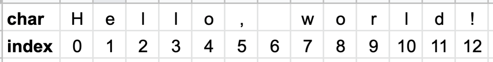

A Guide to Java
A Guide to Java
Chapter 11
String Methods
Commonly Used Methods
Now that we have a better understanding of classes and objects, let’s return to the String type that we’ve used throughout. We’ve noted before that strings are actually objects (instances of the String class). Within the String class, there are several useful methods that can be applied to strings.
The location of each character in a String is called its index. Note that the first index is numbered 0, not 1, as shown below for the String literal “Hello, world!”.
Here is a listing of some of the most important String methods. A complete reference may be found here.
- toUpperCase() returns a version of the String in all uppercase
- toLowerCase() returns a version of the String in all lowercase
- length() returns the number of characters in a String (including spaces)
- charAt(int i) returns the character at index i.
- indexOf(char c) returns the first index where c is found (even if c occurs more than once in the String) or -1 if c is not found. To be clear, we do not mean the actual char ‘c’ here; c is a variable to hold any char.
- substring(int i) returns a part of the String starting at index i to the end.
- substring(int i, int j) returns a part of the String starting at index i and going up to (but not including) j.
Here are each of the above applied to the String “Hello:
String s = “Hello”;s.toUpperCase(); // returns “HELLO”s.toLowerCase(); // returns “hello”s.length(); // returns 5s.charAt(2); // returns ’l’ (not ‘e’)s.indexOf(‘o’); // returns 4, the first index where ‘o’ is founds.indexOf(‘l’); // returns 2, the first index where ‘l’ is founds.indexOf(‘q’); // returns -1, because ‘q’ is not founds.substring(1); // returns “ello”s.substring(2,4); // returns “ll” (not “llo”)
Comparing strings
As we saw earlier, one important method for Strings is called equals. It determines whether the characters in one String object match exactly the characters in another and returns true or false. Note that you cannot use == to compare Strings (or any other reference type, i.e. “non-primitive” type). For reference types, == determines whether two objects are in the same memory location, not whether they contain the same data. It is possible to have two Strings that have the same set of characters but are located in two different locations in memory.
There is also a compareTo method for Strings. It returns an int representing the numerical difference between the first two characters that differ in a String (or 0 if the Strings have the exact same characters), based on their Unicode values (shown in this table-- see the decimal column for the integer values in base 10).
Some examples:
String s1 = "Africa", s2 = "africa", s3 = "Africa", s4 = "AFRICA";System.out.println(s1.equals(s2)) // prints falseSystem.out.println(s1.equals(s3)) // prints trueSystem.out.println(s1.compareTo(s4)) // prints -32 'f' and 'F' have a difference of 32 (102-70)System.out.println(s1.compareTo(s3)) // prints 0